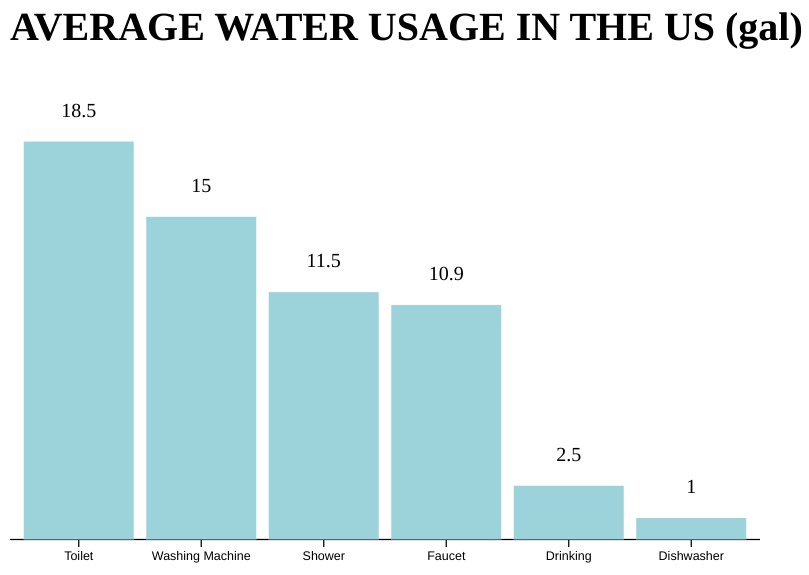

CONTEXT: The "Freedom Project" for SEP11 is all about creativity applied upon your interest. The purpose of this blog is to show my own interest and process throughout the whole year creating a product with the tool I chose. In my case, I chose water usage and the tool d3js and thus birthing a bar graph taht visualizes the numbers of gallons of water used in each household in America.
CONTENT: For my project, I am making a bar graph about water consumption in the US per household. This blog will walk through my process of independently studying the tool d3js in order to make the said bar graph that will contain different components of water that are used in an average American household.
TAKEAWAYS: time managament, confidence/presense, pushing myself, learning, patience.
